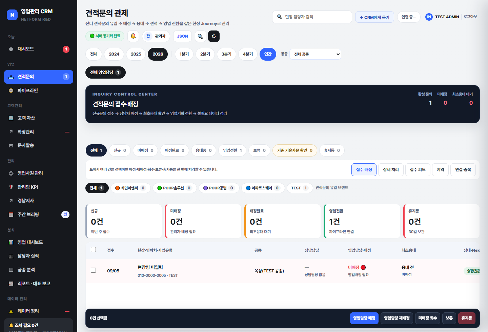

1
견적문의 메뉴에서 오늘 처리할 건 찾기
왼쪽 견적문의를 누른 뒤 상단의 미배정·최초응대 대기 수를 먼저 봅니다.
- 상태 카드에서 신규·미배정·배정완료를 선택합니다.
- 접수일, 현장, 공종, 상담담당, 영업담당을 확인합니다.
- 한 건은 행을 누르고, 여러 건은 체크박스로 선택합니다.
완료 확인 · 선택한 문의가 목록 하단의 처리 영역에 잡힙니다.